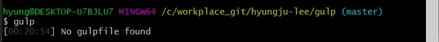
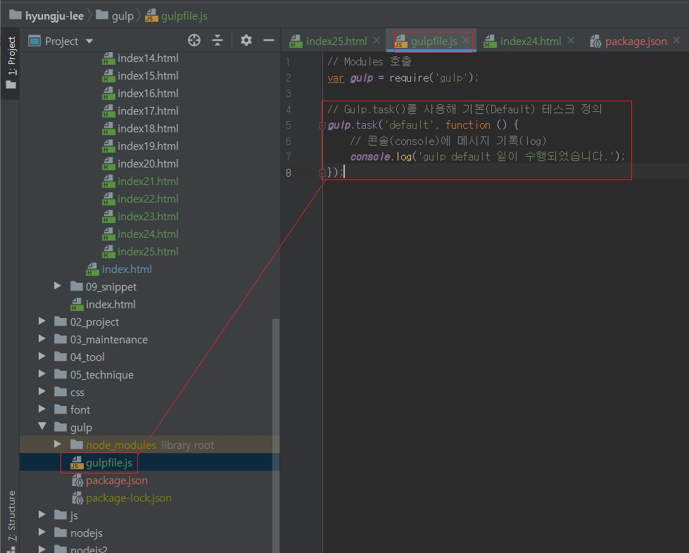

Gulp를 프로젝트 디렉터리에도 설치했으나, 수행할 일(Task)을 정의하지 않았기에 아직은 작동하지 않습니다.
그렇다면 일은 어디에서 정의해야 할까요?
Git Bash에서 gulp 명령어를 실행했을 때 출력되는 메시지(No gulpfile found)에서 확인할 수 있습니다.

Gulp가 수행할 일의 정의는 gulpfile.js 문서에 작성해야 합니다.
gulpfile.js 파일을 생성하여 간단한 일을 정의하고 실행해 보겠습니다.
프로젝트 디렉터리에 gulpfile.js 파일을 생성한 후 Gulp 모듈을 위쪽에 호출합니다.
Gulp가 수행할 일은 gulp.task() 메소드를 사용하여 정의합니다.
gulp.task() 메소드는 두개의 전달인자를 받는데, 하나는 수행할 '업무 이름'이고 다른 하나는 처리해야 할 '업무 프로세스'입니다.
다음을 보면 업무 이름을 default로 정의하고, 처리해야 할 일로 콘솔 메시지를 출력하도록 코드가 입력되어 있습니다.
// Modules 호출
var gulp = require('gulp');
// Gulp.task()를 사용해 기본(Default) 테스크 정의
gulp.task('default', function () {
// 콘솔(console)에 메시지 기록(log)
console.log('gulp default 일이 수행되었습니다.');
});

코드를 저장한 후 gulp default 명령어를 실행하면 화면에 메시지가 출력됩니다.
Gulp가 수행할 일을 실행하는 방법은 'gulp {업무 이름}' 명령어입니다.
default는 기본 업무 이름으로 생략 가능합니다. 즉, gulp 명령어는 gulp default와 동일합니다.